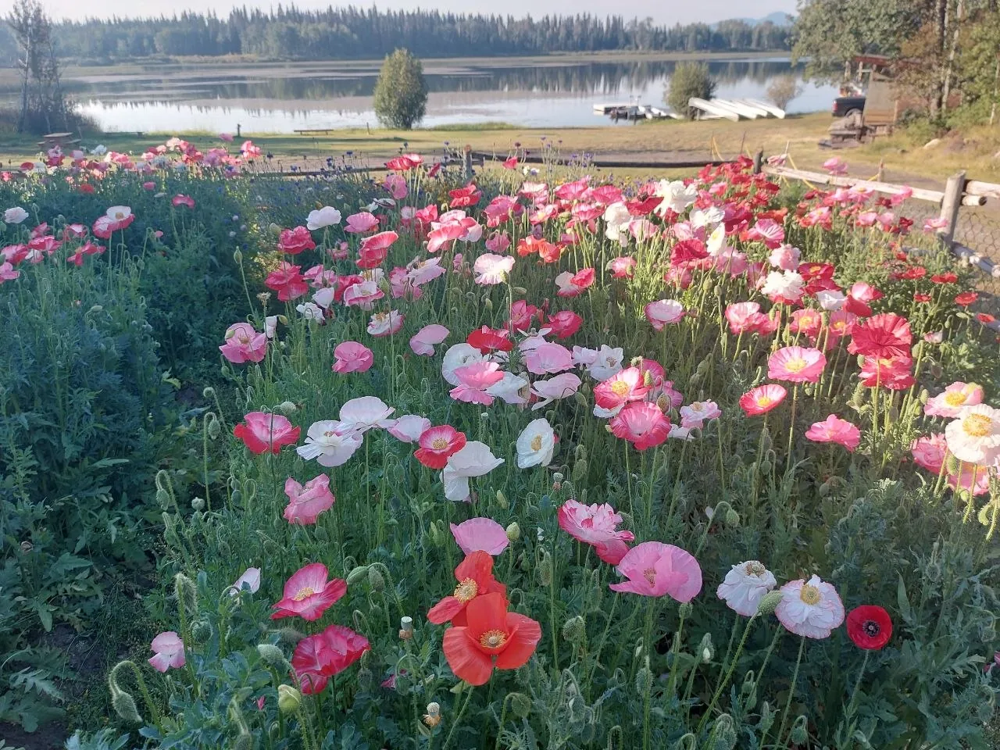
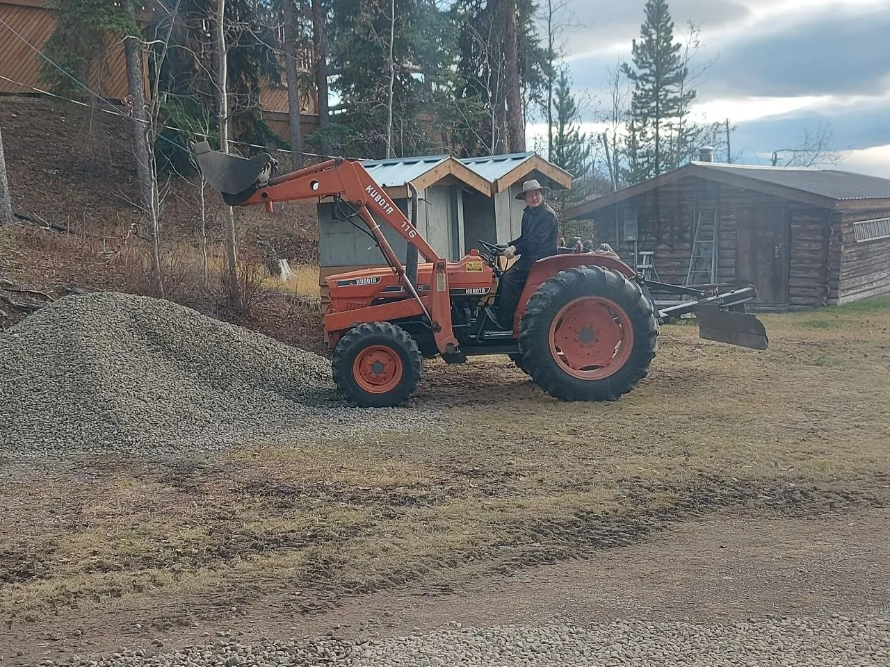
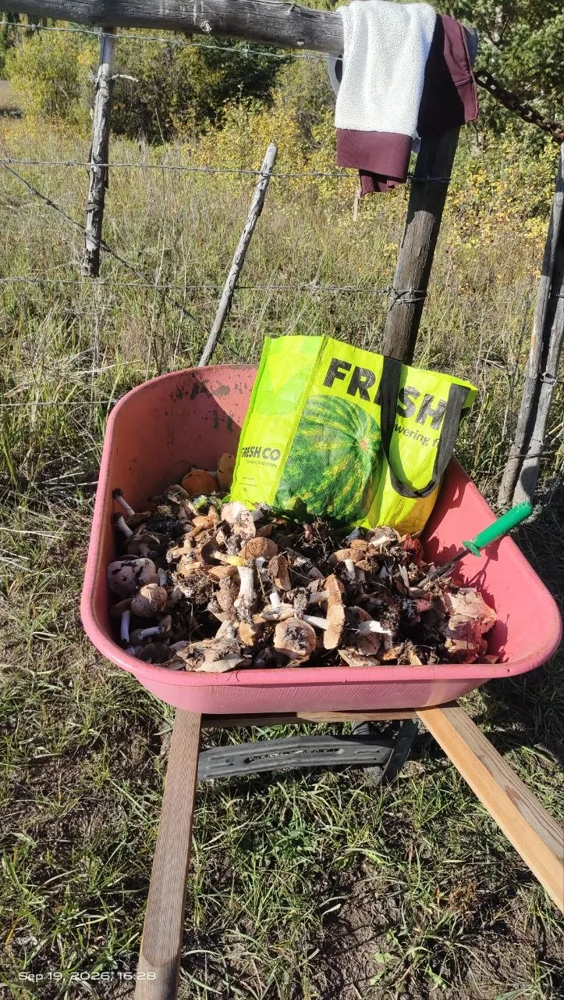
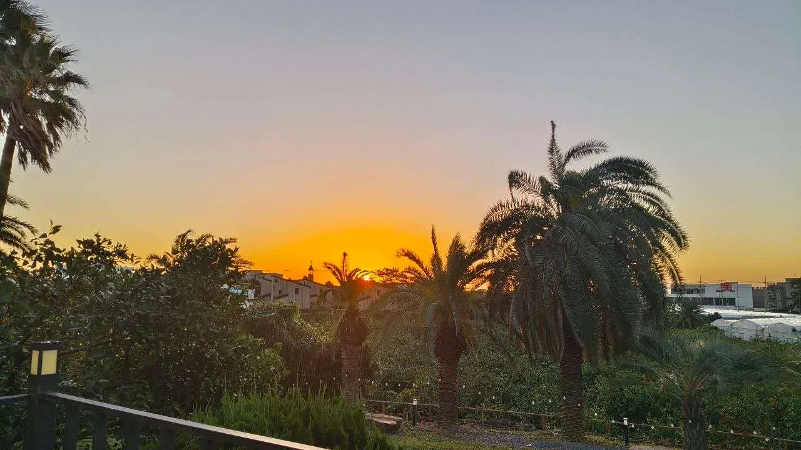
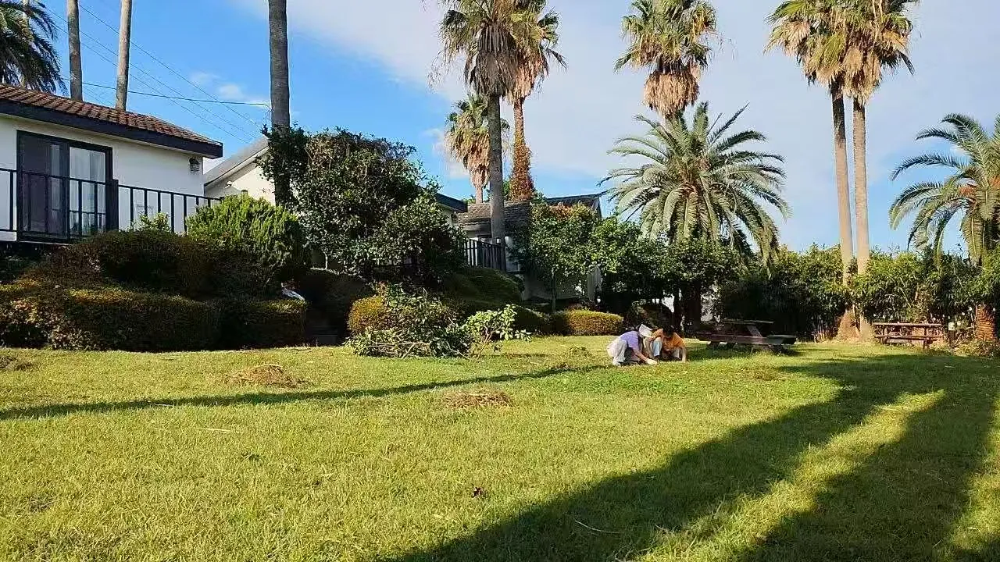
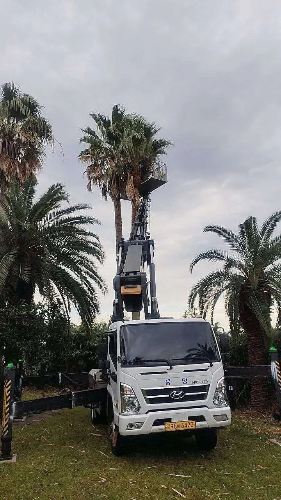

度假胜地在阿纳西姆湖边。湖名是原住民语，意思是「创造之初」（M08）。八月，湖岸的花田里开满了虞美人。
The Resort sits on Anahim Lake, an Indigenous name said to mean "the beginning of creation" (M08). In August the lakeside beds fill with poppies.

在加拿大北部的阿纳西姆湖边，在韩国济州岛的棕榈树下，有一群人一起扫雪、劈柴、铺路、种菜、做饭、接待客人。这一页的照片，都是他们自己拍下、发在生命禅院论坛上的；每张照片下面都写着出自哪一篇帖子。穿插其间的六张插画是 AI 意境创作，用紫色虚线框和「AI意境创作」标出，只表达气质，不是实拍。
美不美，请你自己看。
By Anahim Lake in northern Canada and under the palms of Jeju Island in Korea, a group of people sweep snow, split firewood, lay gravel roads, grow vegetables, cook and host guests together. Every photo on this page was taken by them and posted on the Life Chanyuan forum; each caption links to its post. The six illustrations in between are AI-generated mood illustrations, framed in purple dashes and labelled as such. They convey a mood and are not photographs.
Whether it is beautiful is for you to judge.
度假胜地在阿纳西姆湖边。湖名是原住民语，意思是「创造之初」（M08）。八月，湖岸的花田里开满了虞美人。
The Resort sits on Anahim Lake, an Indigenous name said to mean "the beginning of creation" (M08). In August the lakeside beds fill with poppies.



“坐在二楼客厅的沙发里，往三面望去，雪山、森林、湖泊、天上飞的大雁和老鹰，湖里嬉戏的野鸭子和天鹅等引入眼帘，偶尔进入视野的还有小鹿、红狐、松鼠……我整个人融进了大自然。”原文 · 雪峰《生命禅院加拿大家园一瞥》，2026-11-03 · 原帖
"Sitting on the sofa in the upstairs living room and looking out on three sides: snowy mountains, forest, lake, wild geese and eagles overhead, ducks and swans on the water, now and then a deer, a red fox, a squirrel… I melt into nature."Xuefeng, 2026-11-03 · source post · unofficial translation
 AI意境创作AI-generated mood illustration
AI意境创作AI-generated mood illustration2026 年 10 月 29 日，度假胜地飘了第一场雪；11 月 1 日，湖面开始结冰。这一年，他们修好了能挖、能吊、能推雪的三用拖拉机和一台铲雪机，换了通向湖的甲板浮桶，油漆了桌凳，用碎石铺了约 500 米路（原文，39441）。
On 29 October 2026 the first snow fell at the Resort; on 1 November the lake began to freeze. This year they repaired a three-way tractor (dig, lift, push snow) and a snowblower, replaced the floats on the lake deck, painted tables and benches and laid about 500 metres of gravel road (per post 39441).




“我感觉工作是很好的修炼场，人每时每刻的行为举动和状态都是自身心性和意识的反映……没有一滴汗水是白流的。”原文 · 同心草《加国总院——又是一年丰收时》，2026-11-04 · 原帖
"Work is a fine place for self-cultivation; every action and state of mind reflects one's nature… not one drop of sweat is wasted."Tongxin, 2026-11-04 · source post · unofficial translation
同一篇帖子也写得很实在：旺季「工作繁重且节奏紧凑」，「每隔一周或十天（有时半个月）只要条件允许我们就会安排一次休息」；大家各忙各的岗位，连互相拍劳动照的余力都没有。
在家园里，这样的劳动不是为了领工资。家园的说法是「劳动为生活第一需要」，想进入家园的人，要先过「劳动关」（见 禅院百科 M17、《新时代人类八百理念》第五版第 579 条）。
The same post is frank: in peak season the work is "heavy and tightly paced", and "every week or ten days (sometimes half a month), when we can, we take a day off". Everyone is so busy at their own post that there is little time even to photograph each other working.
None of this work is done for wages. The Home calls labor "the first need of life", and newcomers must first pass a "labor test" (see Chanyuan Wiki M17; 800 Concepts, 5th ed., #579).
加国总院的菜地里种了豆角、香菜、生菜、芥菜、西红柿、韭菜和葱，后院草场还试种了南瓜、向日葵、洋姜。客房走到尽头，下了台阶就是菜地，角上一丛芍药在花期盛放（原文，39442）。
At the Canada Main Home the garden grows beans, coriander, lettuce, mustard greens, tomatoes, garlic chives and spring onions; pumpkins, sunflowers and Jerusalem artichokes were tried on the back meadow. At the end of the guest wing, down the steps, is the vegetable garden, with peonies blooming in one corner (per post 39442).



“今年雨水很多，琴友在草坪、小树林里和林坡下捡了许许多多各种类型的蘑菇……我们选用了可以食用的品种吃了很多很多顿，口感爽滑鲜嫩，味道鲜美。”原文 · 同心草，2026-11-04 · 原帖
"It rained a lot this year. Qinyou gathered all kinds of mushrooms on the lawn, in the copse and down the wooded slope… we picked out the edible ones and ate them for meal after meal."Tongxin, 2026-11-04 · source post · unofficial translation
 AI意境创作AI-generated mood illustration
AI意境创作AI-generated mood illustration清晨，咖啡的香气升起，鸡蛋和烤肠端上桌。下面这张长桌是摆给民宿客人的早餐：两处加拿大家园都经营民宿，2026 年接待房客约 1300 家（原文，39441）。
In the morning the coffee is on, and eggs and sausages come to the table. The long table below is breakfast laid out for B&B guests: both Canada homes run guesthouses, and in 2026 they hosted about 1,300 bookings (per post 39441).


挣来的钱归谁？原文写得很直接：
Who does the money belong to? The post is direct:
“加拿大两处家园的财产，属于全体禅院草，不论是哪一位禅院草，只要你的草龄超过8年且积攒够2000F币，你就有资格来加拿大家园享受免费的吃穿住行生老病死的福利。”原文 · 雪峰，2026-11-03 · 原帖
"The property of the two Canada homes belongs to all Chanyuan Celestials. Any Celestial who has been a member for over 8 years and has saved 2,000 F-coins may come to the Canada homes and receive free food, clothing, housing, transport and care in sickness, old age and death."Xuefeng, 2026-11-03 · source post · unofficial translation
家园把这种安排叫作「无有制」：个人不持有私产，东西归大家（《新时代人类八百理念》第五版）。在济州，他们也从韩国的共享平台免费领来甜菜根、厨具、家具、电器和花盆——「让物品继续发挥价值，减少浪费，也让人与人之间多了一份善意与连接」（原文，39440）。
The Home calls this arrangement "no-ownership": individuals hold no private property; things belong to everyone (800 Concepts, 5th ed.). On Jeju they also received beetroot, kitchenware, furniture, appliances and flowerpots free through Korean sharing platforms, "so things keep their value, less is wasted, and people gain a little more kindness and connection" (per post 39440).
“一无所有，才能拥有一切。”原文 · 《新时代人类八百理念》第五版 第570条 · M14；大白话讲解：《灵舟说人话》第1期 M18
"Only by owning nothing can one have everything."800 Concepts, 5th ed., #570 · M14 · unofficial translation, to be checked
 AI意境创作AI-generated mood illustration
AI意境创作AI-generated mood illustration阳光家园在韩国济州岛，对外叫「棕榈树度假苑」。2026 年 9 月 29 日，他们签下为期三年的民宿经营合同，随后每人领了分工：修剪棕榈树、刷栏杆和外墙、通网络、过水电检测、把厨房旁的荒地开成菜园，「为明年春天的蔬菜种植做好准备」（原文，39440）。这里还在建设和筹备中。
Sunshine Home is on Jeju Island, Korea, known publicly as "Palm Tree Resort". On 29 September 2026 they signed a three-year guesthouse operating contract; then everyone took on a task: trimming palms, painting railings and walls, getting the internet in, passing water and power inspections, and turning wasteland by the kitchen into a garden "ready for planting next spring" (per post 39440). It is still being built and prepared.




“如今，十几棵高大挺拔的棕榈树在风中摇曳，焕然一新的姿态成为园中一道亮丽的风景……大家根据需要参与劳动，共同为家园建设贡献力量和才华。”原文 · 千姿草《阳光家园棕榈树度假胜地建设进展》，2026-11-04 · 原帖
"Now a dozen tall palms sway in the wind, renewed, a bright sight in the grounds… everyone joins the work as needed, contributing strength and talent to building the home."Qianzi, 2026-11-04 · source post · unofficial translation
同一篇帖子开头写道：「从泰国家园的覆灭与大转移，到阳光家园的诞生……」——济州家园是在泰国家园结束之后建立的。
The same post opens: "From the destruction of the Thailand home and the great relocation to the birth of Sunshine Home…" The Jeju home was founded after the Thailand home ended.
美食、跳舞、放烟花、滑冰、看电影，都没有事先安排（2025）。
Food, dancing, fireworks, skating, a film, none of it planned (2025).
M12四个果盘，主楼彩灯全开（2025）。
Four fruit plates; every light on the main house switched on (2025).
M102026 年 10 月初抽空出去玩了一天：高尔夫球场草场、Canim 湖、瀑布公园（这些是外出游览，不是家园，本页未用其照片）。
Early October 2026: one day out to a golf-course meadow, Canim Lake and a waterfall park (an outing, not the Home; its photos are not used here).
39442家园的三个前提：自愿来、有条件才能进、想走随时走。
Three premises: come voluntarily, enter only if you meet the conditions, leave whenever you wish.
M18| 家园Home | 状态（据原文）Status (per source) | 来源Source |
|---|---|---|
| 加拿大总院Canada Main Home | 2017 年建立；经营民宿；暂时不接待访问来宾Est. 2017; runs a B&B; temporarily not receiving visitors | M02 · M13 · 39442 |
| 加拿大度假胜地（阿纳西姆湖）Canada Resort (Anahim Lake) | 2024 年开始营业；2026-11-01 起入冬；暂时不接待访问来宾Operating since 2024; winter from 1 Nov 2026; temporarily not receiving visitors | M02 · M13 · 39441 |
| 韩国济州阳光家园Jeju Sunshine Home | 筹备、建设中；2026-09-29 签订三年民宿经营合同Being prepared and built; three-year guesthouse contract signed 29 Sep 2026 | M13 · 39440 |
| 泰国家园Thailand home | 已结束（历史）Ended (historical) | 39440 |
“耶！有了第二家园，每天的日子都是甜蜜的时光。”原文 · 雪峰《加国总院的每一天》，2023-10-07 · M05
"With Second Home, every day is a sweet time."Xuefeng, 2023-10-07 · M05 · unofficial translation
延伸阅读：程序汇编 M15 · 禅院百科·第二家园 M16Further reading: Procedures M15 · Wiki: Second Home M16